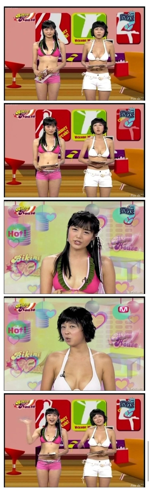

tvN의 전설의 티비엔젤스

비키니 입고 뉴스 진행하는 20년전 엠넷의 프로그램
지금 이랬다간 난리나겠지
tvN의 전설의 티비엔젤스

비키니 입고 뉴스 진행하는 20년전 엠넷의 프로그램
지금 이랬다간 난리나겠지
엔젤스는 반칙이지ㅋㅋ
쓰리 벌떡!!


혼돈의 시기에 저럴때가 잠깐 있긴했다
ㅋㅋ 씨부럴 이 때 성인 방송들도 조또티비 씹구공티비 등 주옥같은 것들이 많았지
백마 남미녀짤은 지금이 훨씬 퍼먹기 쉬우니 비교만 당했을듯
티비엔이 저런거 ㅈㄴ 많이만듬 나는펫 자주봤다 ㅋㅋ
그때 코메디티비 아녔나?!
요즘엔 히잡만 안씌웠지 맘충들 질투해서 저런거 못함 ㅋㅋㅋ
80~90년대 일본 공중파는 심심하면 꼭지 나왔어. 이건 아니다 싶어 심의규제한게 1997년도임
나 저때 초5였는데 한송이 누나 젤 좋아했었다
페미때문에 사회가 뒤로 갔구나 ㄷ
저게 주펄이 군생활 때 봤다는 티비엔젤스구나 원벌떡 투벌떡이 뭔가 했었는데
20년전에 일본은 더욱 개방적이었음.. 한국은 비교불가..
저 맨처음 누나 이름이 뭐였더라
성진국 수준 모르는구나
막짤두번째는 윤도현아님?
일본에 쨉도 안되는디
씹노꼴
김시향 누님께서는 저 뒤로 굉장히 충격적인... 화보를 찍으셨지..
비교적 최근에 상렬이형이 하던것도 있지않냐?
노모쇼
나는펫 나왔던 언니들인가